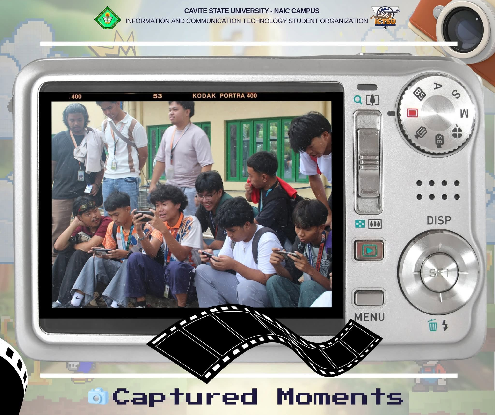
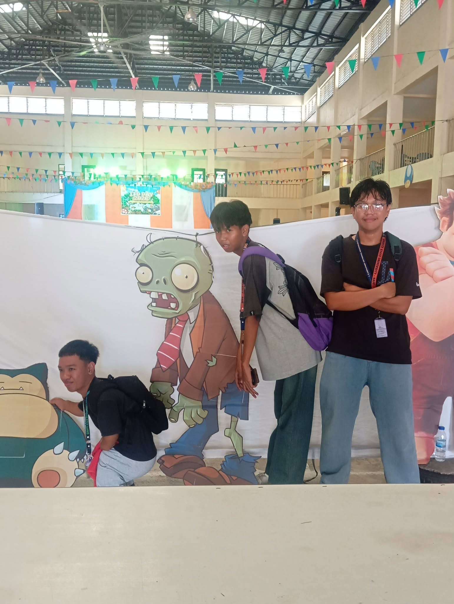
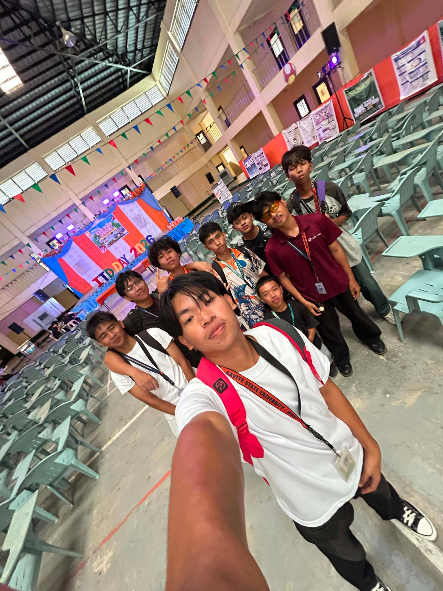

An event that connects, inspires, and create memories
What is ITD Day?
ITD Day is a school event held at Cavite State University that celebrates the creativity, skills, and teamwork of students under the Information Technology and Computer Science programs. It provides a platform for students to showcase their talents and abilities through various activities and competitions.
The event includes different contests such as Mobile Legends tournaments, Call of Duty (COD) competitions, talent showcases, and outfit or costume presentations. These activities highlight both technical skills and creative expression of students in a fun and competitive environment.
ITD Day also brings together students, faculty members, and guests to encourage collaboration, sportsmanship, and learning beyond the classroom. It helps students gain confidence, build friendships, and develop important skills for their future careers.
Overall, ITD Day is a meaningful celebration that promotes talent, teamwork, and student excellence within the university.
My ITD Day Experience
My ITD Day experience was fun and memorable. Together with my friends and classmates, we joined the Mobile Legends tournament. Some of our classmates supported and cheered for us throughout the competition. We were able to reach the semifinals, and although we did not win the championship, we were happy and proud of what we achieved as a team.
After the tournament, we watched the Show Your Talent performances. Many participants impressed us with their skills and talents, while others entertained the audience with funny and enjoyable acts on stage. The event was full of excitement and laughter.
There were also different booths selling flowers, food, and other items, which made the celebration even more enjoyable. Overall, ITD Day gave us the opportunity to bond with friends, enjoy various activities, and create unforgettable memories that we will always remember.
Importance of ITD Day
ITD Day is important because it provides students with opportunities to showcase their talents, skills, and creativity outside the classroom. Through various activities and competitions, students can apply what they have learned while developing confidence, teamwork, leadership, and communication skills.
The event also strengthens the bond between students, faculty members, and organizations by encouraging collaboration and participation. It creates a fun and engaging environment where students can learn, compete, and build lasting friendships.
Most importantly, ITD Day helps students gain valuable experiences, create memorable moments, and appreciate the importance of unity, sportsmanship, and personal growth within the university community.
Activities
🏆 Mobile Legends Tournament
S*udents formed teams and competed in exciting matches that showcased teamwork, strategy, and communication skills.
🔫 Call of Duty Tournament
Participants tested their coordination and gaming abilities through competitive gameplay.
💻 Coding Competition
Students demonstrated their programming knowledge and problem-solving skills by completing coding challenges within a limited time.
⌨️ Speed Typing Competition
Participants competed to see who could type the fastest and most accurately, highlighting their keyboard proficiency and concentration.
🎤 Show Your Talent
Students showcased their talents through singing, dancing, acting, and other entertaining performances.
👕 Outfit Competition
Participants expressed their creativity and confidence through unique and stylish outfits.
🍔 Food and Booth Fair
Various booths offered food, drinks, flowers, and other items, adding excitement and enjoyment to the event.
🤝 Student Interaction and Socialization
Gallery


